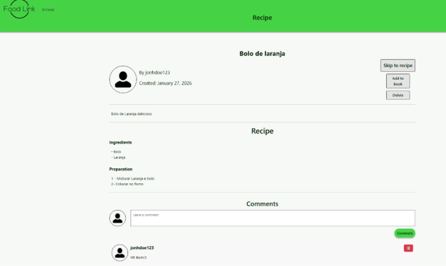
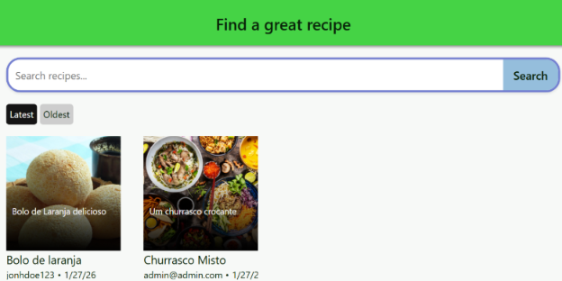

User Authentication
User registration and login functionality, providing individual accounts and access to personalised features.
A full-stack web application for sharing, discovering and managing recipes, allowing users to interact with the community and organise their favourite dishes.
April 2025FoodLink is a full-stack web application developed using ASP.NET and C#, focused on recipe sharing and personal recipe management. The platform allows users to discover recipes, share their own creations and interact with other members of the community.
Users can create an account, log in securely, publish recipes and leave comments on other users' contributions. The application also includes personal recipe lists, allowing users to save and organise recipes they want to keep or try later.
User registration and login functionality, providing individual accounts and access to personalised features.
Publish and share recipes with the community, making it easier for users to discover new dishes.
Comment on shared recipes and interact with contributions from other users.
Save recipes for later access and keep track of dishes users are interested in.
Organise saved recipes into personalised lists, making recipe management easier.
The application was developed using ASP.NET and C#, with Visual Studio as the main development environment. GitHub was used for version control, while Jira and Confluence supported project organisation and documentation.

